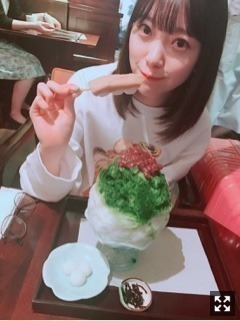

2018/0606Wed桃狩りしたいなあ
ケラケラさんの
スターラブレイションを聴いています♪
この曲、好きやな〜
ラストシンデレラは、
定期的に見たくなるドラマの1つ！
ウォーターボーイズ
失恋ショコラティエ
逃げる恥だが役に立つ
プロポーズ大作戦
花より男子
リッチマンプアウーマン
も定期的に見たくなります。
あと何が好きだったかなー
思い出し中。。
皆さんはどんなドラマが好きでしたか？？
聞きたいです(^-^)
好き。といえばかわいい女の子も好き！
私も頑張らなきゃ〜いやされる〜って言いながら
色んな方の画像をメンバーと見ながら
話しています。笑
アイドルには言わずともかわいい人は
たくさんいるから省略させていただき、
新垣結衣さん 桐谷美玲さん 佐々木希さん 小松菜奈さん
今田美桜さん 志田友美さん 小嶋陽菜さん 野崎萌香さん
広瀬すずさん 吉岡里帆さん ohmygirlさん twiceさん
かわいい(^o^)♡♡
ため息がでるくらい女神な方々です。
かわいいって罪だ〜〜

そういえば！
この間ね、SKE48の
松井珠理奈さんとかき氷食べてきました！
同い年 同じ東海地方
肉好き 最初にセンターをさせていただいた
っていう幾つかの共通点があり
大先輩だけど、本当に話しやすいの☺︎
お互いグループは違うけど
目指してるものやグループに
対する考え方など色々話すことができて
珠理奈さんと話してると
たくさん笑えて楽しいし、
もっともっと私も頑張らなくちゃって
思えます。
グループ関係なく
誘ってくれたり
仲良くしてくれて、嬉しいな...
人との出会いを大切に。
私も、濃い人間にならなくちゃ。
tops lilly brown
pants snidel
お気に入りのコーディネート♡
今日は23:45〜レコメン！
聴いてね〜 よろしくね〜
久しぶりの、のりみおな！
桃狩りしたいなー
フルーツの中で1番すき。
リップもタブレットも桃味！
ばーい。
2018/06/06 12:36


コメント(473)
(。´Д⊂)
好きなドラマって年齢バレしそう。
って言ってる時点で、、、！Σ（￣□￣;）
でも、ウォーターボーイズは夏になると見たくなるよね！
そういえば、ブラッディ・マンデイって当時は結構衝撃だった。
ハラハラドキドキっていう感じの話だった！
最後にももトーーク
子供のころに田舎で食べた桃がすっごい記憶に残ってる！
ジューシーなやつ丸かじりした～
おいしかった～
僕もアイドル好きだけど、
断然堀ちゃんが一番かわいい！
堀ちゃんのかわいさに、毎日癒されているよ〜
土曜日の個別握手会会いに行くねー
レコメン聞いたよ。久々に元気な声聞けて
嬉しかったです！
お気に入りのコーディネート可愛いいね
からだに気をつけて頑張ってね。
僕は「アンティーク」と「ランチの女王」が好きで、定期的に見たくなるなぁ。
自分も桃狩り行きたーい！！
カワイイ女の子は多いけど、やっぱり私は未央奈ちゃんが一番です。
白色の服装は未央奈ちゃんのイメージにピッタリで、とても良く似合ってるよ。
レコメンは聴けなかったから、今日タイムフリーで聴きます。楽しみです。
では良い体調で過ごしてくださいね。
乃木坂46と頑張ってるcuteでsmartな未央奈ちゃんを応援しています。
僕の好きなドラマは
時効警察
結婚できない男
トリック
ＳＰＥＣ
ＳＰ警視庁警備部警護課第四係
とかかなぁ。
まだあるけどタイトルが思い出せない。笑
昨日はレコメンで久しぶりにみおちゃんの声が聴けて幸せでした♪
ブログ更新ありがとう
珠理奈ちゃんとかき氷
意外な関係
中部地方だから
アリなんだね
美味しそうだけど(笑)
未央ちゃんも充分
アイドルとしてかわいいので
堂々として大丈夫だから
改めまして
更新よくしてくれて
忙しいところいつもありがとう
今日も体調気を付けてね
僕はプロポーズ大作戦
花より男子、世界一難しい恋が大好きです
俺は桃より苺がすき
ブログ更新楽しみにしてるよ！
大好き！体調気をつけて
いつも癒されてます
桃の美味しい時期が到来しましたね〜
この時期は期間限定で、桃のケーキが発売されたりしますが、個人的には桃をそのままかぶりつくのが一番美味しい‼︎
フルーツって、不思議ですよね♪
なんでこんなに勝手に美味しくなってくれるんだろう(笑)。
先日、じゅりなさんと一緒にカキ氷を食べに行ったんですね‼︎
写真には、お団子も写っているけど(笑)。
じゅりなさんとは、自分も何回か会ったことがあります。
限られた時間の中でも本当に楽しく会話してくれるし、毎回会いに行って良かったなって思います♪
総選挙も、じゅりなさんにとっていい結果になるといいですね‼︎
あ、そうそう。
カキ氷といえば、松井の玲奈さんの方も結構好きみたいですよ♪
今度はぜひぜひ、玲奈さんとも一緒に行ってあげてください…‼︎
ではでは、また。
今日も未央奈にとっていい1日になりますように♪
カチューシャとか隠されててもわかるよ！笑
5時9時はおすすめのドラマだよ！！
他グループで意見交換いーね！！
欅の子とも仲良くなってね！！
いつも応援してます！
未央奈さんドラマ本当に好きですね。
何見てたか思い出そうとしたけど、思い出せなかった(T_T) ごめんなさい。
レコメン聞きましたよー
のりみおなが聞けて幸せだった。
未央奈さんの今日が幸せで溢れた１日になりますように。
では、またね(^-^)/
今日も１日頑張りましょう＼(^o^)／
今日も1日よろしくお願いします！
僕はドラマで言えば『結婚できない男』
最近で1番好きな女優の方は 浜辺美波さん ですかねー！
あ、もちろん未央奈さんも好きですけどね〜！
いや、思った事をそのまま打ち込んでるだけなので書き直してるわけじゃないし、文章の構成とか考えてるわけじゃないので時間は掛からないはずなのに。
でも、目的地に着く前に書き終えそうです☆
ドラマは毎クール必ず観てるわけじゃないけど、それでも好きでハマったドラマはいくつかありますよ♪
ランチの女王
愛していると言ってくれ
オレンジデイズ
ウォーターボーイズ
リーガルハイ
逃げるは恥だが役に立つ
他にもあるけど代表的なもの☆
最近は、海外ドラマや韓流を観る機会が多くなってて、そっちも書きたいけど、韓流とか話数が凄く多いものがあるから書けない(-_-;)
珠理奈さん、坂道AKBの時とかでも仲良しだもんね☆
堀ちゃんが熱弁出来る場が増えてて、その報告を聞けるとホッとする♪
同じグループ内での価値観と外からの他のグループでの価値観の情報交換もいいね☆
熱く語ったからクールダウンを兼ねてのかき氷かな♪
堀ちゃんの洋服、髪型、最高だよ！！
いつも可愛い写真を沢山ありがとう(*^^*)
このブログの前の写真とかも可愛くて最高でした:-)
そして、レコメンも面白かったです♪
前半の堀ちゃんの笑い声が可愛くて、凄く癒されたのと、後半のバッサリ切る堀ちゃんが好き！
のりさんとリスナーさんの会話に割って入っての質問責めと彼女いないって断定する早さにも笑わせていただきました☆
さぁ、目的地に着くまでに書き終えるとか言ってたけど、もう着きそう(-_-;)
久し振りに有楽町線に乗ったけど、ホームでの待ち時間があって良かった☆
最寄りには着いたから、書き終えたら会場に向かいます:-)
では、いってきます☆
慶次郎でした。
レコメン 楽しかった！来週も楽しみにしてます。
あっ！ ちゃんと一票入れましたよ！
桃狩り！行きたい！ 桃の香りが溢れてるのかな？
ハマったドラマは、
新参者
結婚できない男
なぞの転校生
恋のチカラ
かな。チェックしてみてね。
いろいろな出会い、別れ。
いろいろな失敗、成功。
流した心の涙の数だけ強くなれる。
強い想いがあるから厳しくも、優しくもなれる。
未央奈は強くなってるし、輝いてるよ。
一瞬一瞬、一期一会を大切に。
未央奈は未央奈のままで、
最高の笑顔を！
楽しみにしてたのに。
いつも可愛い、服は未央奈ちゃんに合っています
色々な古いドラマを見るのが好きです
吾輩は古風だから... 笑
そして、いつものように、未央奈ちゃんは様々なグループの他の人と一緒に出かけてくるたびに、それは幾分吾輩を嬉しくする。
えと、今夜レコメンを聴くよ
さぁ
頑張ってね〜
大好き
チャァオ～～☆彡
ミオッキ～～～も、桃好き～～⤴⤴❤❤❤❤❤❤❤❤笑顔
香りがいいよね❗❤❤❤❤❤
普通、ハウスの桃狩りは7月下旬からじゃない❗
では、ミオッキ～～～桃狩りの為にお仕事頑張ってください❗❤❤❤
またねぇ‼❤❤❤❤❤笑顔
☆大人しい、おすまし！より☆彡
大きいし甘い
自分も花より男子は観たくなりますね
それから、初森ベマーズ、咲、ドクターXは定期的に観たくなりますね
可愛いが罪なら、未央奈ちゃんは大罪人ですね
グループの垣根を超えて仲良くって言うのも良いですね☺️
色々と吸収して、濃い人間になって下さいね
白い服、とても似合ってます☺️
今回も沢山の写真ありがとうございました
俺も桃大好きです♪
最近はドラマはあまり見れてないけど、
かわいい女の子はチェックしてますよ！笑
珠理奈ちゃんとの写真も見ましたよ～
今回の総選挙は期待できそうですね☆
そして、、
人との繋がりは本当に大事だと思います◎
今回のレコメン！も面白かったですよ～☺
ふと見返したくなるドラマといえば、『流星の絆』かな☆
あのノスタルジックさが好き☆
そういえば。。設楽さんも出演されてました！♪
『花のち晴れ』私も観てるよ～
美少女アイリ様も好きだけど、
音ちゃん＆メグリンに共感できて切ない。。♡
音ちゃんとメグリン、来週どうなっちゃうんだぁ！？？
私なら。。
嫁にするなら音ちゃん・彼女にするならメグリン・
親友にするならアイリ様がいいな♪
。。。どんな目線で言ってるのか謎になった(笑)
それから、【朝ドラ】はずっと好きで元気で癒し（＊＾－＾＊）
Twiceなら私は、【おとうふ姫ダヒョンちゃん】に一直線だよ♡！
この前のMステ見返してる～かわいい(^o^)♡♡
かわいいって正義だ～～元気で癒し！朝ドラと同じ(笑)
桃の香り私も好きだよ～。
今年の桃はまだ見てないなぁ～食べるときも切るときも美味しいね♪
父の日のプレゼント、香水リクエストされてて何の香りにしようか模索中。。
父に桃の香りは可愛すぎやけど(笑)、自分へ桃のリップ買っちゃおうかな♡
前回はブログの感想を書きました！
時間→「No.328 2018年6月 7日 00:27」
今回は、前回のコメントに訂正と追加をさせて頂きます！
〇訂正前
・鍵のかかった部屋
・ラッキーセブン
・三毛猫ホームズの推理
〇訂正後
・ラッキーセブン(2012年01月16日～)
・三毛猫ホームズの推理(2012年04月14日～)
・鍵のかかった部屋(2012年04月16日～)
→放送順がぐちゃぐちゃ！見直し不足(謝)
〇追加
・黒の女教師(2012年07月20日～)
・悪夢ちゃん(2012年10月13日～)
・幽かな彼女(2013年04月09日～)
・35歳の高校生(2013年04月13日～)
・SUMOKING GUN(2014年04月09日～)
・地獄先生ぬ～べ～(2014年10月11日～)
・ごめんね青春!(2014年10月12日～)
・電影少女(2018年01月13日～)
→結構忘れていました(謝) でも懐かしい～！
ここまで読んで頂きありがとうございました！
毎日お仕事お疲れ様です！体調にはくれぐれも気を付けて頑張ってくださいね！
ではでは！
掟上今日子の備忘録とか好きだなぁー
あとは、世界の中心で愛をさけぶ、かな(๑･̑◡･̑๑)
松井珠理奈とけっこう共通点あるんだね！いいなーーー
桃好きなんだ笑
なるほどー笑
好きだったドラマは…
ホタルノヒカリ
のだめカンタービレ
リーガルハイ
いつかこの恋を思い出してきっと泣いてしまう
好きな人がいること
とかが今思い返すと好きだったかな☺︎
レコメン!でのりほりコンビのトークが聴けると
やっぱり1週間が楽しくなるから良き♪
また明日からも頑張ろう(^^)
逃げ恥は、
逃げる「は」恥だが役に立つ
だよー！
覚えておいてね(๑˃̵ᴗ˂̵)
出遇いを大切にしてますね。
いつも応援しています！
写真ありがとう！
明日も頑張ってね！
りょーへー(R.N.イナダウアーびーむ)だよ♪
今日のメール、のほほ～んとした感じ好き！お天気いいの、とーっても嬉しい！うんうん、お天気ってきたら、のりさんだよね！昨日のレコメン！も楽しすぎたもん！2週間ぶりののりほり、やっぱり二人の空気感が最高ですなぁ！優しさの強い未央奈ちゃんが、リア充リスナーに対しては冷たくなるの、面白くて好きだよ！笑
未央奈ちゃんに頑張ろうって言われると、いつも以上に頑張れるよ！ありがとう！back numberさんの曲、さっき聴いてた♪最近は、色んな曲聴くかも！高橋優さんは新曲出たから、たくさん聴いてる！あと、KinKi Kidsさんの曲をよく聴くかなぁ！
ストロー貰い忘れちゃったんだね…！そういう経験、あるなぁ！少ししてから、あ、、、ってなる！笑
夜ご飯が食べたい…
#毎日コメント
#今日もお疲れ様
#パンパカパーン
#TWICEさんの曲の話だったんだね
#今週は風邪引いてる
#冷房に喉をやられて
#喉から鼻にきたよ
#未央奈ちゃんも気を付けてね
#そういや
#メロンがあるらしい
#楽しみや
#明日も楽しみおな♡
#おやすみおな(´∇｀)
お仕事いつもお疲れ様です！
今日も1日お疲れ様でした
ドラマが終わってくね
寂しいね(´；ω；`)
お風呂上り30分くらい汗が止まらないよー(-｡-;
どうしたらええんや〜(´Д` )
では、明日も1日楽しもうd(@^∇ﾟ)/ﾌｧｲﾄｯ♪
おやすみ☪️
応援してます！
ファイトです！
俺は杏仁豆腐が好きだから
杏仁豆腐狩りがしたーーいっ
前回は前々回の訂正と追加を書きました！
時間→「No.384 2018年6月 7日 16:57」
2週間振りの「レコメン！」お疲れ様でした！
未央奈ちゃんの生の声が聴けたし、TWICEのライブの裏話が聴けて嬉しかったです！
パンパカ未央奈ちゃん凄く可愛かったです！
未央奈ちゃんの魅力は、よく笑いよく食べる、家族と仲が良いだけじゃありませんよ！他にも円陣の努力・感謝・笑顔を忘れない所や何事も前向きに考える性格、あと可愛い顔です！
今週ののりほり亭も終始笑わせて頂きました！僕も未央奈ちゃんがリア充リスナーさんにだけ冷たくなるの好きです！「記者未央奈」もそうですが、「〇〇未央奈」って昨年から凄く出てきますね！これって未央奈ちゃんの魅力が溢れ出てる証だと思いますし、これからもドンドン「〇〇未央奈」が増え続けて欲しいです！
最後に「がんばりき！」してくれてありがとうございました！言い方が凄く可愛かったです！
モバメ毎日ありがとうございます！
今日も良いお天気、お天気と言ったらのりさんですね！明日も東京は晴れるって！よきよき！こっち(三重県松阪市)は曇時々雨だって(悲)
車中で外の景色見ながらback numberさん、なんかオシャレだね！何聴いてたんだろう？
ジュースのストロー貰い忘れちゃったんだね！僕も小学生の時にありました！しばらく経って飲もうと思った時に「あっ」って感じで・・・あの時は僕も直接飲みました(笑) 懐かしい！
ここまで読んで頂きありがとうございました！
毎日お仕事お疲れ様です！体調にはくれぐれも気を付けて頑張ってくださいね！
おやすみおな～！
桃狩りかぁーイチゴ狩りならしたことあるけど桃はないなていうか桃狩りがあること自体初めて知りました！
行ってみたいな。
コメントする